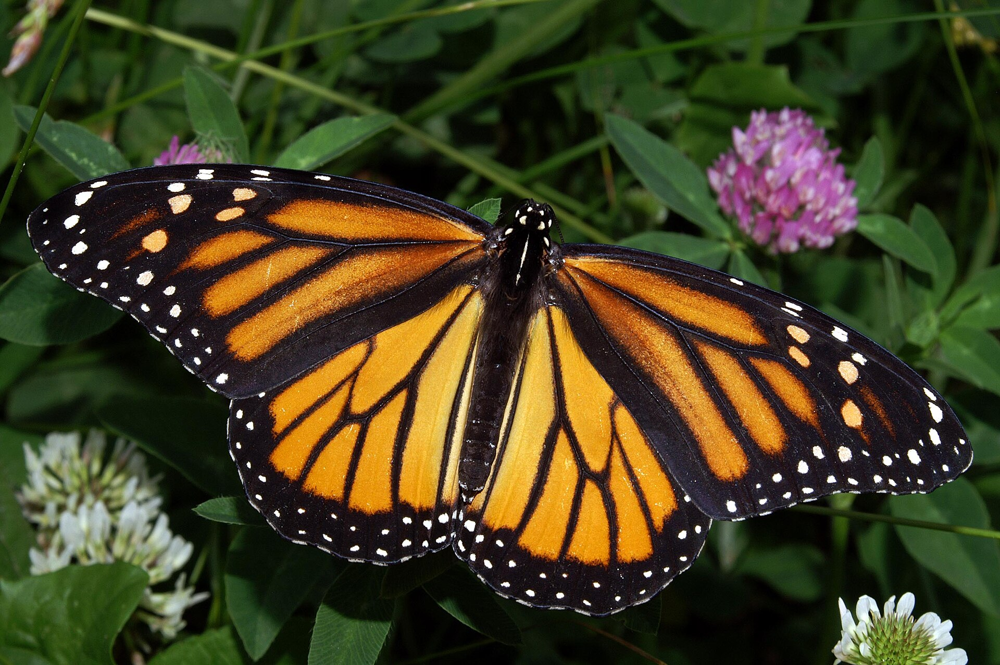
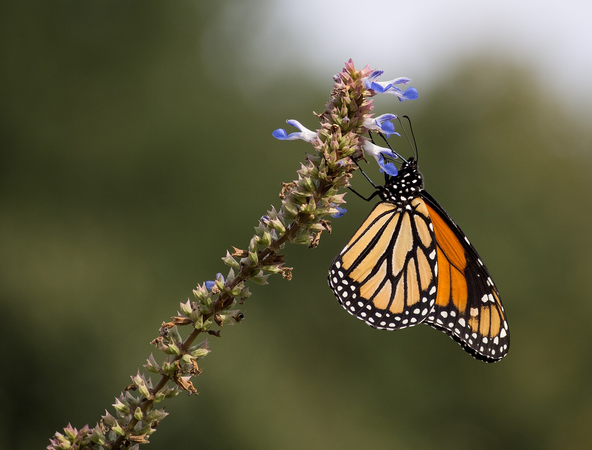
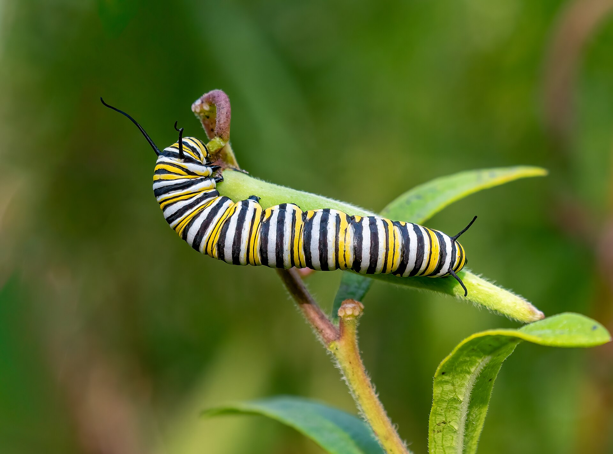

Danaus plexippus
Common nowYou can see Monarchs in Cape Coral any month. Late August is mostly our local breeding insects on milkweed, not the Mexico-roost story. Migratory adults use Florida too, but that wave is later. A bright one over tropical milkweed in a yard is the expected August sighting.


Yards, parks, fields, marshes.
Native milkweeds
Asclepias perennis, A. tuberosa, A. humistrata, A. incarnatathe common garden scarlet milkweed
Asclepias curassavicaQueen is mahogany, not bright orange.
Viceroy is smaller with a black line across the hindwing.
Soldier is scarce here and has a blotchy pale band under the hindwing.
Resident brood plus eastern migrants. Not a single roost town. Peak of the migrant story is October–November.